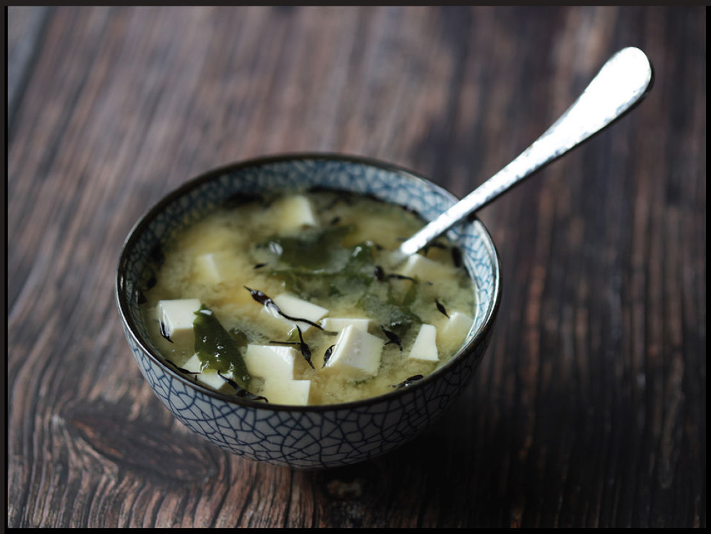
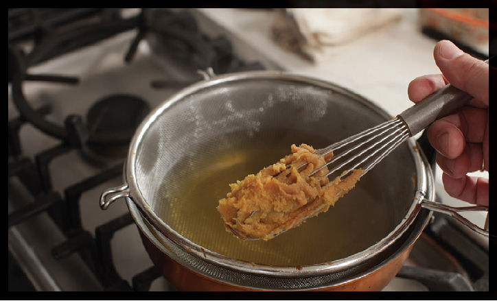
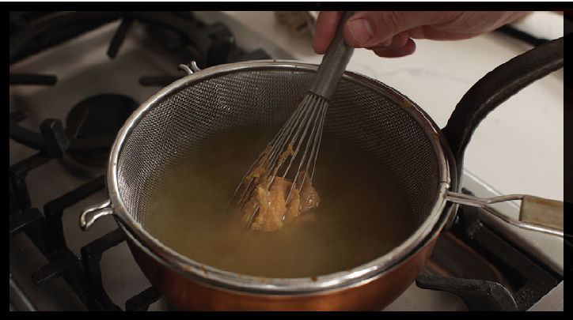

MISO SOUP

|
Yield Serves 4 |
Active Time 5 minutes Total Time 5 minutes |
You can add a wide range of vegetables to miso soup. Try fresh tender greens like spinach or pea shoots or thinly sliced seasonal vegetables like radish, carrot, onion, or turnip. Heartier greens like cabbage, bok choy, or chard are also great thinly sliced. You can add squares of fried tofu, thin slices of bacon, or bits of shredded chicken or thinly slivered pork. Leftover rice and scrambled egg drizzled into the hot soup are also delicious, as are tiny cockles or clams, added at the end and simmered just until they open. Any kind of mushroom, cut into thin shavings or spoon-sized pieces, is a welcome addition to miso soup as well. All of these ingredients should be added at the start of step 2 so they can be simmered very gently before serving.


There were many reasons for the middle school version of me to pretend to be sick so I could stay home from school. I once faked a cold for an entire week so I could finish beating the Legend of Zelda, then faked it again the week after so I could finish reading The Neverending Story (a classic, every bit as magical as the film, and now a favorite of my daughter as well). But the best part of staying home sick: as much miso soup as my mom could make. Next to rice, miso soup was the food I consumed most growing up, and it’s still one of my favorite comfort foods.
Basic miso soup is nothing more than dashi and miso, and the secret to great miso soup is to start with great dashi. We already know how to do that. The rest is simple.
As for the miso itself, you can use whatever shade of fermented soybean paste you’d like. White miso, red miso, and dark miso are all used in various regions of Japan.
You want to ensure that the miso is entirely lump-free as it gets incorporated into the broth. There are a couple ways to do this. Some folks treat it sort of like a béchamel, starting with miso in the pot and slowly adding hot broth in a steady stream, stirring vigorously with chopsticks or a whisk as the water gets incorporated.
I find it easier to use a whisk and a fine-mesh strainer. I start by pushing the top of a whisk directly into the container of miso, twisting as I pull it out to grab as much miso as I need (about a tablespoon per cup of dashi).
Next, I submerge a fine-mesh strainer into the pot of hot dashi. I add the miso to the inside of the strainer, swirling the whisk and pressing it until all the miso has passed through the strainer and only the large, grainy chunks remain, making them easy to discard.
As for other ingredients, it’s up to you. I love the texture and flavor of wakame, a dried seaweed. You can reconstitute it separately in hot water, but personally, I don’t have the patience—I just add it to my hot soup and let it soften on its own. Firm silken tofu cubes are a must for me—I love their slippery texture as they heat up in the broth—as are scallions. If I’m feeling like a miso soup lush, I’ll go ahead and add some hon shimeji or slippery nameko mushrooms to the mix. Small clams or cockles are also a classic, delicious addition to miso soup.
Even with homemade dashi, miso soup takes all of 15 minutes to make 100 percent from scratch, which is something I appreciate on mornings when I’ve had a bit too much sake the night before: It’s extremely easy on sensitive stomachs and about as good a hangover cure as I know.
INGREDIENTS
1½ quarts (750 ml) dashi
6 tablespoons (90 g) white, red, or brown miso paste
6 ounces (170 g) firm silken tofu, cut into ½-inch cubes
¼ ounce (7.5 g/about 2 tablespoons) dried wakame seaweed (optional)
2 whole scallions, thinly sliced (optional)
DIRECTIONS
1 Bring the broth to a subsimmer in a medium saucepan or wok (bubbles should just start escaping the bottom of the pot, but there should be no vigorous simmering or boiling), then reduce the heat to low to keep it hot but not boiling. Use a whisk to scoop the miso paste out of its container (or add the paste directly to the strainer using a spoon). Use a whisk or spoon to press the paste through the strainer into the broth, swirling and shaking the strainer to encourage it. Discard any large grains that don’t pass through.
2 Add the tofu and wakame and simmer gently until the wakame has rehydrated, about 5 minutes. Garnish with scallions (if using) and serve immediately.
Shopping for and Storing Miso Paste
At a regular supermarket you’re likely to see two types of miso: light miso and dark miso. At the Japanese market, you’ll find a vast rainbow of browns, from light brown to dark brown to kinda orangey reddish brown.*
All miso is made through the same basic process. A grain or a pulse—typically soybeans, though barley, rice, millet, rye, and, more recently, chickpeas and quinoa—is ground and fermented with salt and the fungus Aspergillus oryzae (koji in Japanese). The resulting protein-rich paste has a salty-savory flavor that can range from heavy and funky to light and mildly sweet. Typically, the darker the color of the miso, the higher the proportion of soybeans used and the stronger the flavor. At home I keep three varieties of miso in my fridge:
 Akamiso (red miso) is a dark red miso that has a rich flavor and is excellent in miso soup, in hearty stir-fries and marinades (such as for Broiled Miso Eggplant, here), in noodle soups, or in dips for grilled or fresh vegetables.
Akamiso (red miso) is a dark red miso that has a rich flavor and is excellent in miso soup, in hearty stir-fries and marinades (such as for Broiled Miso Eggplant, here), in noodle soups, or in dips for grilled or fresh vegetables.
Regular shiromiso (white miso) is a pale yellow miso with a lighter flavor that works well in salad dressings (Sesame-Ginger Vinaigrette, here), marinades, light miso soup, and in lighter stir-fries (such as Stir-Fried Kabocha Squash with Sake and Miso, here).
Saikyo miso is a variety of white miso from Kyoto that is especially smooth in texture and sweet, due to the high rice content in its mash. It is used to prepare saikyo-yaki—miso-marinated broiled fish, such as the Miso-Glazed Broiled Black Cod or Salmon (here).
Miso has long been used as a preservative (before refrigeration, fish was packed in soybean or rice miso to preserve it—this combination of fish with rice is the origin of modern sushi), and it has an excellent shelf life. Kept in a sealed container in the fridge, it’ll last for months or even years. Miso often comes sold in resealable containers, though sometimes it’s sold in plastic bags. If I buy it in plastic bags, I snip off the corner, squeeze out what I need, then pack the whole bag into a separate sealable container for storage in the fridge.
*The color that Bob Ross would call “burnt ochre”
Hondashi = Umami Supremacy
Dashinomoto (literally “foundation of dashi”) or instant dashi, is granulated dry dashi and an indispensable ingredient in my own pantry. On paper, it is to dashi what powdered chicken bouillon is to chicken stock or beef bouillon is to beef stock. Unlike powdered bouillons, however, it’s a legitimately useful stand-in for the real stuff in many applications. The most popular brand is Hondashi, made by the Aji-No-Moto corporation, the same company that built its empire through the discovery and extraction of monosodium glutamate. The name is a contraction of the words hontou (“for real”) and dashi, and true to its name, it’s really made from dashi, albeit propped up with a host of other flavor enhancers.
It’s made by evaporating and freeze-drying actual dashi, then combining it with monosodium glutamate (MSG), disodium inosinate, disodium succinate (which provide a multiplying effect for MSG), salt, and sugar. Where powdered chicken bouillons taste mainly of salt, granulated dashi is an absolute umami bomb, and because it’s relatively low in sodium, it’s useful for adding umami backbone to a host of dishes, even in places where you wouldn’t typically incorporate actual dashi.
In The Food Lab, I wrote extensively about how to use umami bombs like anchovies, fish sauce, and Marmite in Western soups and stews to bolster their meaty flavors. Add instant dashi to that list. A teaspoon added to a pot of Tex-Mex chili con carne, French boeuf bourguignon, or even Italian ragù Bolognese will instantly boost its flavor, and because Hondashi is so subtle in flavor, it doesn’t leave your stews with any kind of fishiness.*
Because it comes as dry granules, it can be incorporated to add umami flavor to dishes where added liquids would not be appropriate, such as sprinkled onto popcorn, blended into mayonnaise, or used in dry rubs for grilling or roasting.
Here are a few of my favorite uses:
Hondashi Eggs
Beat ½ teaspoon (about 1 g) Hondashi and a pinch of salt into every two eggs when making scrambled eggs for an umami boost. Or sprinkle Hondashi directly onto hard- or soft-boiled eggs while eating them.
Hondashi Mayonnaise
Whisk ½ teaspoon (about 1 g) Hondashi, ½ teaspoon (2 g) sugar, and 1 teaspoon (5 ml) rice vinegar into a cup of mayonnaise to make a quick Japanese-style mayo (think: Kewpie) that is especially good on steamed and chilled vegetables.
Hondashi Popcorn
Grind together 1 teaspoon (about 2 g) Hondashi, 1 teaspoon (3 g) kosher salt, and 1 teaspoon (4 g) sugar in a mortar and pestle or spice grinder. Add furikake (here), ao-nori (dried green seaweed), toasted sesame seeds, and/or shichimi or ichimi togarashi (Japanese seven-spice or chile blend) to taste, then toss it with a bowl of buttered popcorn.
Hondashi Risotto, Oats, and Grits
Season risotto, oats, grits, polenta, or other saucy grains with Hondashi in place of salt for an umami boost and a subtle oceany aroma. This is especially great for seafood-based dishes like shrimp and grits or a seafood risotto.
Note that while Hondashi is the most popular brand out there, it has quite a few competitors. Kayanoya is a premium brand that I would recommend for dishes in which the dashi is front and center, such as miso soup or simmered vegetable dishes.
*Note: there are versions of Hondashi and other instant dashi that include stronger fishy-smelling ingredients, like sardines or mackerel. I would not use those for Western dishes!